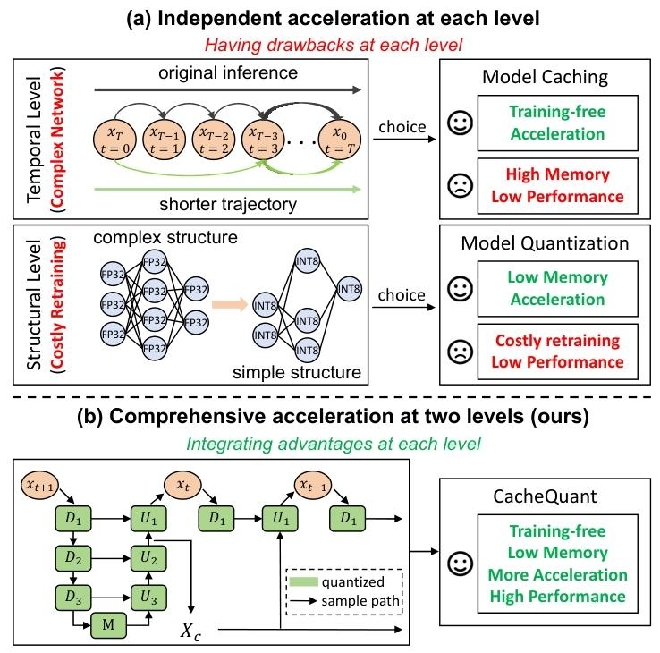
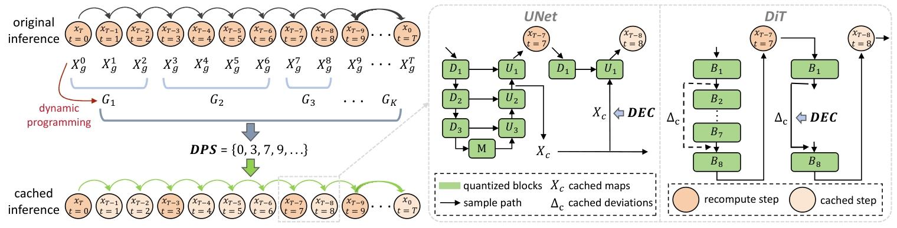
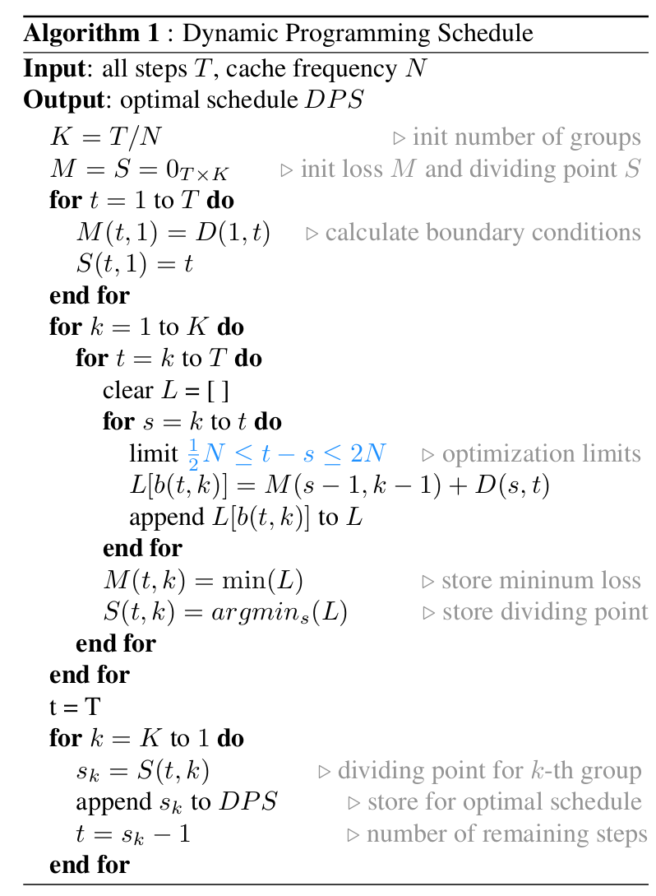

全文翻译
摘要
扩散模型在图像合成领域逐渐崭露头角，展现出卓越的生成能力。然而，由于时间和结构层面的冗余导致推理速度缓慢且网络复杂，阻碍了其在现实场景中的低延迟应用。当前针对扩散模型的加速方法分别聚焦于时间层面和结构层面。但在每个层面进行独立优化以进一步突破加速极限时，会导致性能显著下降。另一方面，整合两个层面的优化可以增强加速效果。遗憾的是，我们发现这两个层面的优化并非完全正交。先进行单独优化再简单整合，会导致性能不理想。为解决这一问题，我们提出了CacheQuant，这是一种全新的无训练范式，通过联合优化模型缓存和量化技术来全面加速扩散模型。具体而言，我们采用动态规划方法确定最优缓存调度，其中仔细考虑了缓存和量化的特性，以最小化误差。此外，我们提出解耦误差校正，逐步减轻耦合和累积的误差。实验结果表明，在MS-COCO数据集上，CacheQuant对Stable Diffusion实现了5.18倍的加速和4倍的压缩，而CLIP分数仅下降0.02。我们的代码已开源。
1. 引言
近年来，基于不同框架（如UNet [57] 和DiT [53]）的扩散模型 [7, 19, 69] 已在图像合成领域占据主导地位，展现出卓越的生成能力。扩散模型已被应用于众多令人瞩目的场景，包括但不限于图像编辑 [2, 20, 45]、图像增强 [10, 24, 60]、图像到图像的转换 [5, 58, 70]、文本到图像生成 [50, 55, 59, 79] 以及文本到3D生成 [33, 42, 54]。尽管扩散模型极具吸引力，但由于其需要数千次去噪迭代且包含数十亿模型参数，导致推理速度缓慢且网络结构复杂，这给其在实际应用中的部署带来了重大挑战。例如，即使在高性能硬件A6000 GPU上，Stable Diffusion [56] 单次推理也需要超过一分钟的时间，并且消耗16GB内存。
为应对上述挑战，研究界主要从两个层面加速扩散模型：时间层面和结构层面。对于前者，现有方法 [26, 40, 46, 61, 68] 通过缩短去噪轨迹来解决推理速度慢的问题。相比之下，其他方法 [3, 9, 27, 37, 38] 则侧重于简化网络结构，以解决后者（网络复杂）的问题。尽管这些方法已取得显著成果，但各自都存在缺陷。如图1所示，时间层面的方法无法降低网络复杂度，甚至会加剧这一问题；而结构层面的方法则需要昂贵的再训练过程。此外，在每个层面独立优化以进一步突破加速极限（例如采用更短的去噪路径 [44] 或进一步减少模型参数 [71]）会导致性能显著下降。因此，我们致力于开发一种能在时间和结构两个层面全面加速扩散模型的解决方案，旨在整合各个层面的优势，同时消除其各自的缺陷。这样一来，我们就能在不影响性能的前提下，进一步突破加速极限。
|  |
|---|
| 图 1. 动机概述。(a) 传统加速方法在各个层面的原理和特性。(b) 我们的方法整合了模型缓存和量化的优势，同时消除了它们的缺点，实现了两个层面的全面加速。 |
我们首先分析了每个层面上方法的特性。在时间层面，模型缓存 [4, 65, 73] 利用缓存机制消除每一步的冗余计算，无需再训练，与其他方法 [8, 36, 51, 68, 80] 相比，在相同的计算预算内能够保持时间连续性和性能。在结构层面，与其他基于压缩的方法 [13, 28, 35, 63, 75] 相比，基于量化的方法 [15, 66] 在训练开销方面更高效，且更易于硬件实现。因此，我们选择模型缓存和量化来全面加速扩散模型。此外，这两种技术还具有协同作用：量化减少了缓存所增加的内存使用量，而缓存则缓解了由时间冗余导致的量化难题。
基于上述分析，从理论上讲，将优化后的模型缓存与量化方法相结合，能够在实现更显著加速的同时，控制性能的下降幅度。然而，在实践中我们发现，这两种方法的优化并非完全正交。独立优化后再简单组合，会导致性能不理想。根本问题在于，缓存和量化都会给原始模型引入误差。这些误差会迭代地耦合和累积，进一步加剧对模型性能的影响，阻碍优化方法的有效整合。更具体地说，如果将模型量化直接应用于缓存方法，量化误差会导致缓存的去噪路径出现显著偏差；相反，如果将模型缓存直接添加到量化方法中，缓存误差会导致量化误差大量累积。在这两种情况下，模型性能都会严重下降。
为此，我们提出了CacheQuant，通过联合优化模型缓存和量化技术来解决上述问题。具体而言，我们提出了动态规划调度（DPS），将缓存调度的设计建模为动态规划问题，旨在最小化缓存和量化所引入的误差。通过优化，DPS的计算复杂度显著降低，在ImageNet上对LDM（潜在扩散模型）进行处理仅需8分钟。为了进一步减轻耦合和累积的误差，我们提出了解耦误差校正（DEC），它以无需训练的方式，在每个时间步分别对缓存误差和量化误差进行通道级校正。由于对量化误差的校正可以融入权重量化中，因此DEC在网络推理过程中仅额外引入一次矩阵乘法和加法运算。据我们所知，这是首个在时间和结构两个层面研究扩散模型加速的工作。我们还通过在各种硬件平台（GPU、CPU、ARM）上部署CacheQuant，评估了其加速能力。
综上所述，我们的贡献如下：
- 我们提出了CacheQuant，这是一种新颖的无需训练的范式，能够在时间和结构两个层面全面加速不同框架的扩散模型。我们的方法进一步突破了加速极限，同时保持了性能。
- CacheQuant通过DPS最小化来自缓存和量化的误差，并通过DEC进一步减轻这些误差。它通过联合优化模型缓存和量化技术，实现了两者的优势互补。
- 我们在采用UNet和DiT框架的扩散模型上进行了实验。大量实验表明，我们的方法在加速比和性能方面都优于传统的加速方法（求解器、缓存、蒸馏、剪枝、量化）。
2. 相关工作
扩散模型已逐渐超越生成对抗网络（GANs）[1, 12]和变分自编码器（VAEs）[18, 22]，成为图像生成领域的主导方法。然而，由于推理速度慢且网络结构复杂，它们在实际场景中的低延迟应用受到阻碍。当前研究主要从两个层面来加速扩散模型。
时间层面的加速方法侧重于缩短采样轨迹。一些方法通过调整方差调度[51]或修改去噪方程[68, 80]来完全移除某些步骤。研究进一步深入到随机微分方程（SDE）[8, 36]或常微分方程（ODE）[40, 41]的快速求解器，以创建高效的采样步骤。还有一些方法[25, 67, 81]通过并行采样来加快推理速度。相比之下，基于缓存的方法[4, 44, 73]通过缓存块的输出来减少每一步的推理路径。
结构层面的加速方法主要致力于简化网络架构。先前的研究重新设计了轻量级网络[28]，或将频率先验融入模型设计中[75]。OMS-DPM[35]创建了一个扩散模型库，以便在不同步骤选择不同的模型。一些方法[43, 46, 61]利用蒸馏技术简化模型架构。另一方面，基于剪枝的方法[3, 9, 78]减少模型参数数量，而基于量化的方法[27, 29, 30, 37, 38]通过使用低位宽表示实现模型压缩。
3. 预备知识
下面，我们介绍本工作中采用的两项关键技术。
模型缓存通过存储网络的中间输出加速推理过程。对于具有时序网络的扩散模型，该技术利用相邻去噪步骤之间特征图的固有相似性，消除时间维度上的计算冗余。例如，我们将某一步骤t的块输出激活$X_{g}^{t}$缓存为$X_{c}^{t}$。在步骤$t+1$进行推理时，复用$X_{c}^{t}$来替代真实值$X_{g}^{t+1}$，从而省去$X_{g}^{t+1}$的计算过程。现有方法在不同的网络层实现缓存：Deepcache [44] 和 Faster Diffusion [26] 分别缓存上采样块和UNet编码器的输出特征图；Block Caching [73] 进一步自适应地缓存所有块；Δ-DiT [4] 则根据不同去噪阶段的影响，选择性地缓存块。此外，该机制可扩展到更多步骤，计算一次缓存特征$X_{c}^{t}$，并在后续的$N-1$个步骤中复用：
缓存调度的确定（即确定何时重新计算缓存特征）直接影响模型性能。例如，对于具有T个步骤的扩散模型，当缓存频率N固定时，均匀缓存调度可表示为$\{0, N, 2N, …, (T/N-1)N\}$，对应的缓存特征为$\{X_{c}^{0}, X_{c}^{N}, X_{c}^{2N}, …, X_{c}^{(T/N-1)N}\}$。为减少缓存引入的误差，现有方法设计了多种缓存调度：[4, 44, 73] 通过实验和超参数调优确定调度，[26] 则直接手动指定调度。在本工作中，如图2所示，对于UNet框架，我们借鉴DeepCache [44] 的方法，将单个上采样块的输出作为缓存特征$x_{c}$；对于DiT框架，参考Δ-DiT [4]，将两个块之间的偏差$\Delta_{c}$作为缓存特征。我们将调度选择建模为动态规划问题，目标是最小化缓存和量化引入的误差，从而获得最优调度。
|  |
|---|
| 图2. CacheQuant概述。动态规划调度（DPS）选择最优缓存调度，解耦误差校正（DEC）减轻耦合和累积的误差。 |
模型量化通过低精度整数值表示模型参数和激活值，实现模型压缩和推理加速。对于浮点向量x，其均匀量化过程如下：
其中，$\hat{x}$为量化后的值，s为缩放因子，z为零点，$\lfloor \cdot \rceil$表示取整函数，位宽b决定了裁剪函数$clip(\cdot)$的范围。根据是否需要对模型进行微调，该技术可分为两种：训练后量化（PTQ）和量化感知训练（QAT）。早期的PTQ方法 [31, 47] 利用小型校准集，以无需训练的方式校准量化参数；随后，基于重构的方法 [32, 48, 72] 通过反向传播优化量化参数。另一方面，QAT方法 [11, 49] 需要在原始数据集上微调模型权重，这种方法虽能保持性能，但需要大量的时间和计算资源。值得注意的是，现有扩散模型的量化方法要么基于重构 [27, 38]，要么基于微调 [14, 37]。与之形成鲜明对比的是，我们提出了一种PTQ校正策略来减轻误差，同时保留无需训练的优势。
4. CacheQuant
在本节中，我们将介绍CacheQuant，这是一种新颖的无训练范式，通过联合优化缓存和量化技术来全面加速扩散模型。我们首先在4.1节分析综合加速面临的挑战，然后在4.2节和4.3节中提出解决这些挑战的方法。CacheQuant的概述如图2所示。
4.1. 综合加速的挑战
利用模型缓存和量化可以实现扩散模型的综合加速。不幸的是，我们发现，尽管对这两种方法分别进行优化然后简单整合能带来更显著的加速，但模型性能却远不能令人满意。为了分析上述问题，我们在ImageNet上对LDM进行了实验。如图3所示，当对原始模型分别进行模型量化和缓存优化时，FID分数分别下降了0.76和4.71。然而，简单地将这两种优化结合起来，会导致FID损失达到11.99。根本问题在于，缓存和量化本质上都会给原始模型带来误差。这些误差会迭代地耦合和累积，进一步加剧对模型性能的影响，阻碍优化方法的有效结合。如图4所示，如果将模型量化直接应用于缓存方法，量化误差会导致缓存的去噪路径出现显著偏差；相反，如果将模型缓存直接应用于量化方法，缓存误差会导致量化误差大量累积。这表明这两种方法的优化并非完全正交，因此需要进行联合优化。
4.2. 动态规划调度
我们以UNet框架为例来说明我们的方法。为了最小化误差，我们分析所有步骤的特征图$X = \{X_{g}^{0}, X_{g}^{1}, …, X_{g}^{T-1}\}$，以指导缓存调度的选择，并将该问题重新定义为有序样本的分组问题。
对于一个具有T个步骤和缓存频率N的扩散模型，所有特征图被分为$K = T/N$个组，形成一个分组集合$G = \{G_{1}, G_{2}, …, G_{K}\}$。同一组内的时间步共享相同的缓存特征。为了实现最优分组，我们提出了动态规划调度（DPS）：
首先，我们考虑两个约束条件：1）每个特征图只属于一个组，确保没有步骤被重复或遗漏；2）每个组内特征图的顺序必须保持不变，以保持去噪过程的时间一致性。具体规定如下：
其中，每个组的第一个元素$X_{g}^{s_{*}}$的时间步表示分割点，这些分割点形成了缓存调度。
其次，我们定义组内误差为$D_{k}(i, j)$，它表示当步骤i到j被分配到第k个组时，由缓存和量化引入的误差。值得注意的是，由于$X_{g}^{i}$被缓存并替代$\{X_{g}^{i+1}, …, X_{g}^{j}\}$，误差是通过依次比较$X_{g}^{i}$与$\{X_{g}^{i+1}, …, X_{g}^{j}\}$并将所得差异求和来计算的。此外，量化误差源于特征图之间的绝对数值差异，因此使用L1范数来衡量。因此，$D_{k}(i, j)$的数学表达式如下：
第三，我们将T个步骤划分为K个组的划分记为$b(T, K)$。分组损失函数定义为$L[b(T, K)]=\sum_{k=1}^{K} D_{k}(i, j)$。第K个最优组的解可以表示为：
其中，s表示分割点，$K \leq s \leq T$确保每个特征图只属于一个组，$M(T, K)$最小化分组损失以获得第K个最优组$G_{K} = \{X_{g}^{s}, X_{g}^{s+1}, …, X_{g}^{T-1}\}$。简而言之，上述公式可以重新表述为：
可以看出，第K个最优组是基于将s-1个特征图分配到K-1个最优组的基础上得到的。因此，所有最优组都可以基于边界条件$M(t, 1)$通过迭代求解得到。DPS的工作流程如算法1所示。

然而，由于嵌套循环，DPS的计算复杂，导致收敛缓慢。我们考虑实际的分组因素，将组长度优化到不超过$2N$且不小于$N/2$。这显著降低了DPS的计算复杂度。例如，在ImageNet上对具有250个步骤的LDM进行求解的时间从4小时减少到8分钟。最后，DPS有效地获得了最小化缓存和量化误差的最优调度。
4.3. 解耦误差校正
为了在保持加速效率的同时进一步减轻耦合和累积的误差，我们探索了一种无训练的解决方案。我们首先分析在不同条件下接收缓存特征的块的输出：
其中，$O \in \mathbb{R}^{B \times C^{\circ}}$、$X \in \mathbb{R}^{B \times C^{i}}$和$W \in \mathbb{R}^{C^{i} \times C^{\circ}}$分别表示输出、激活和权重。B、$C^{i}$和$C^{\circ}$分别表示批大小、输入通道维度和输出通道维度。下标g、c和q分别表示不同的条件：真实值、缓存和量化。我们观察到$O_{g}$和$O_{c q}$在通道粒度上具有很强的相关性，如图5(a)所示。因此，我们可以沿着输出通道维度为$O_{c q}$计算校正参数，以减少它们相对于$O_{g}$的误差。并且我们在每个步骤进行校正，以减轻累积误差。校正公式如下：
其中，$a \in \mathbb{R}^{C^{\circ}}$和$b \in \mathbb{R}^{C^{\circ}}$是校正参数。我们使用最小二乘法求解它们。例如，第k个通道的校正参数如下：
这里，$\overline{O}_{g(:, k)}$和$\overline{O}_{c q(:, k)}$分别表示第k个输出通道的均值。当使用校正参数调整$O_{c q}$时，尽管消除了均值误差，但误差的方差仍然很大，导致校正效果不佳，如图5(b)(1)和(3)所示。根本问题在于，直接校正$O_{c q}$无法有效消除缓存误差，因为这些误差本质上源于$X_{g}$和$X_{c}$之间的差异。
为了解决这个问题，我们提出了解耦误差校正（DEC），将缓存和量化引入的误差$E_{o}$解耦为缓存误差$E_{c}$和量化误差$E_{q}$：
与式9类似，我们校正$X_{c}$以减少$E_{c}$，校正$O_{c q}$以减少$E_{q}$：
其中，校正参数$(a_{1}, b_{1}) \in \mathbb{R}^{C^{i}}$、$(a_{2}, b_{2}) \in \mathbb{R}^{C^{\circ}}$的求解方式与式10相同。实验结果表明，DEC不仅消除了均值误差，还有效降低了误差方差（如图5(b)(4)所示），显著提高了性能。例如，与直接校正相比，DEC将LDM在ImageNet上的FID分数提高了0.91。
我们还提供了DEC优于直接校正的理论证明。通过等价变换（详细内容见附录9），两种校正方法将$O_{c q}$表示为：
可以看出，与在输出通道上直接校正相比，DEC在输入通道和输出通道上都调整了均值和方差。当假设$a_{1} = 1$且$b_{1} = 0$时，这两个表达式是等价的，这意味着$X_{g}$和$X_{c}$之间的均值误差为零且方差可忽略不计。然而，如图5(b)(2)所示，这种假设显然不成立，因此DEC是更合理的方法。此外，通过将$(a_{2}, b_{2})$融入权重量化中，DEC在网络推理过程中仅额外引入一次矩阵乘法和加法运算。
5. 实验
5.1. 实验设置
模型、数据集和指标。为了证明我们方法的有效性，我们在采用UNet框架的DDPM、LDM和Stable Diffusion [56, 68]以及采用DiT框架的DiT-XL/2 [52]上进行了评估。我们在六个常用数据集上呈现了实验结果：CIFAR-10、LSUN-Bedroom、LSUN-Church、ImageNet、MS-COCO和PartiPrompt [6, 23, 34, 76, 77]。遵循先前的研究 [4, 37, 44, 74]，我们使用MS-COCO的5k验证集和PartiPrompt的1.63k文本描述作为Stable Diffusion的提示词，并为DiT-XL/2生成10k张图像。对于其他任务，我们生成50k张图像来评估生成质量。评估指标包括FID、IS和CLIP分数（基于ViT-g/14）[16, 17, 62]。此外，我们采用Bops（$Bops = MACs \times b_w \times b_x$）、加速比（在GPU上）和模型大小（MB）来展示加速和压缩性能。
缓存和量化设置。我们的方法使用Deepcache [44]、Δ-DiT [4]和EDA-DM [38]作为基线。我们分别选择最后3/1/1个块作为DDPM、LDM和Stable Diffusion模型的缓存块，并保留中间块（[4]中的$I=7$和$N_c=14$）作为DiT-XL/2的缓存对象。对于模型量化，我们利用[37]中的时间量化器对所有层进行量化，对权重采用通道级量化，对激活采用层级量化，这是常见的做法。此外，CacheQuant可以与量化重构无缝集成以提升性能。
5.2. 与时间层面方法的比较
扩散模型的主流时间层面加速方法包括模型缓存和快速求解器。我们首先将CacheQuant与基于缓存的方法（Deepcache [44]、Δ-DiT [4]）进行了比较，结果如表2和表3所示。我们的方法实现了与基于缓存的方法相当甚至更优的性能，同时实现了4倍的模型压缩和显著的加速比提升。
此外，如表1所示，CacheQuant对缓存频率表现出稳健性，始终优于其他方法。在较小的缓存频率下，我们的方法甚至实现了比全精度模型更低的FID分数。这在先前的研究中也经常出现 [27, 37, 38]，表明生成的图像质量与全精度模型生成的相当。我们通过将其与PLMS求解器 [36] 进行比较，展示了CacheQuant相对于快速求解器的优越性。如表4所示，以采用50步PLMS的Stable Diffusion为基线，将PLMS步数减少到20步会严重降低性能。相比之下，我们的方法在保持性能的同时，实现了4倍的模型压缩和超过5倍的加速。
5.3. 与结构层面方法的比较
结构层面的加速方法主要包括模型量化、剪枝和蒸馏。我们在表2中将CacheQuant与基于量化的方法（EDA-DM [38]）进行了比较。在8位精度下，缓存频率$N=5$的CacheQuant优于EDA-DM（FID分别为4.03和4.13）。重要的是，CacheQuant避免了昂贵的再训练，并实现了显著的加速比提升（加速比分别为7.87倍和1.91倍）。随着位宽的减小，4位精度的EDA-DM实现了8倍的压缩和3.35倍的加速，但FID分数显著下降到44.12。与之形成鲜明对比的是，结合重构的CacheQuant保持了12.65的FID分数，实现了8倍的压缩和18.06倍的加速。我们在表2中与基于剪枝的方法进行了比较。可以看出，CacheQuant在效率、性能、加速和压缩方面都优于Diff-Pruning [9]。我们还将CacheQuant与基于蒸馏的方法进行了比较，包括Small SD [39]和BK-SDM [21]，这些方法通过在LAION [64]数据集上再训练，以Stable Diffusion为基线开发而成。如表4所示，我们的方法与这些方法相比，实现了更优的性能和更快的加速。
5.4. 分析
消融研究。为了评估每个提出的组件的有效性，我们在ImageNet上使用具有250步DDIM的LDM-4模型进行了全面的消融研究，结果如表5所示。我们将8位量化添加到缓存频率$N=20$的DeepCache中作为基线，导致FID分数增加到15.36。引入DPS来选择最优缓存调度后，FID分数显著提高到8.47。这表明DPS有效地最小化了缓存和量化引起的误差。通过进一步结合以无训练方式校正解耦误差的DEC，FID分数提高到7.21。此外，我们的方法与重构方法相结合，进一步提升了性能，显著将IS分数提高到180.42。
加速与性能的权衡。我们研究了各种方法在加速与性能之间的权衡，结果如图6所示。随着加速比的增加，传统的加速方法，如缓存（Deepcache）、量化（EDA-DM）和求解器（PLMS），都出现了显著的性能下降。与之形成鲜明对比的是，我们的方法在两个层面全面加速扩散模型，在进一步突破加速极限的同时保持了性能。详细的实验设置见附录10。
效率研究。如图7所示，我们的方法在效率上显著优于传统方法。例如，基于压缩的方法需要超过10小时的GPU运行时间，而基于蒸馏的方法则需要超过10天才能完成。
加速模型的部署。为了评估实际应用中的加速效果，我们在各种硬件平台上部署了加速后的扩散模型。如图8所示，在GPU上的加速效果明显优于在CPU和ARM上的加速效果。我们的方法在MS-COCO上实现了Stable Diffusion的5倍GPU加速，显著促进了其在实际场景中的应用。
6. 结论
在本文中，我们提出了CacheQuant，这是一种新颖的无训练范式，可在时间和结构两个层面全面加速扩散模型。为解决优化的非正交性问题，我们提出了动态规划调度（DPS），通过选择最优缓存调度来最小化缓存和量化带来的误差。此外，我们采用了解耦误差校正（DEC），在无需任何再训练的情况下进一步减轻耦合和累积的误差。在多个数据集和不同模型框架上的实证评估表明，CacheQuant优于传统的加速方法。重要的是，所提出的范式在保持性能的同时突破了扩散模型的加速极限，从而为该领域提供了新的视角。
CacheQuant：全面加速的扩散模型补充材料
8. 详细的实验实现
我们使用来自官方网站的DiT-XL/2¹、DDIMs²和LDMs³的预训练模型。对于Stable Diffusion，我们使用CompVis代码库⁴及其v1.4检查点。条件生成模型由一个扩散模型和一个解码器模型组成。与先前的工作[27, 38, 74]一样，我们只关注扩散模型，不对解码器模型进行量化。在重构训练中，所有实验的校准样本数设置为1024，训练批次大小设置为32。然而，对于Stable Diffusion，由于时间和内存资源限制，我们将重构校准样本数调整为512，训练批次大小调整为4。我们使用开源工具pytorch-OpCounter⁵来计算量化前后模型的大小和Bops。并且，按照量化设置，我们只计算扩散模型部分，不包括解码器和编码器部分。我们使用ADM的TensorFlow评估套件guided-diffusion⁶来评估FID和IS，使用开源代码clip-score⁷来评估CLIP分数。加速后的扩散模型通过利用CUTLASS⁸和PyTorch⁹进行部署。加速比是通过在RTX 3090上测量生成单张图像所需的时间来计算的。按照标准做法[37, 38, 50]，我们采用零样本方法在COCO-val上评估Stable Diffusion，将生成的512×512图像和验证图像resize为300×300，并进行中心裁剪，以评估FID和IS分数。
9. 用两种校正方法表示$X_{cq}W_q$
基于式8和式9，直接校正简单地将$X_{cq}W_q$表示为：
我们的方法分别对$X_c$和$O_{cq}$进行校正。基于式8和式9，推导得到方程：
此外，$X_{cq}W_q$的表达式为：
由于校正参数$(a,b)\in\mathbb{R}^{C^\circ}$，$(a_1,b_1)\in\mathbb{R}^{C^i}$，$(a_2,b_2)\in\mathbb{R}^{C^\circ}$，因此当且仅当$a_1 = 1$且$b_1=0$时，$X_{cq}W_q$的两种表示形式才等价。
10. 加速与性能权衡评估的实验设置
我们在5.4节评估了各种方法在加速与性能之间的权衡。图6中的详细实验设置和结果如表6和表7所示。
11. 生成结果的比较
在本节中，我们展示了来自原始模型和其他加速方法的随机样本，这些样本具有固定的随机种子。我们的方法保持8位精度。我们在图9和图10中可视化了不同方法生成的图像质量和延迟。
12. 局限性和未来工作
虽然CacheQuant在8位精度下以无训练方式取得了显著成果，但在W4A8精度下需要依赖重构来恢复性能。未来，我们将进一步改进CacheQuant，以提高其与W4A8精度的兼容性。
文章总结
加速原理
- 当前的加速方法主要有时间层面的加速（更大的步长）和结构层面的加速（更小的网络）。
- 本文将提出一种无训练的加速方法，集合了两种类型的加速方法。该方法基于模型缓存和量化。